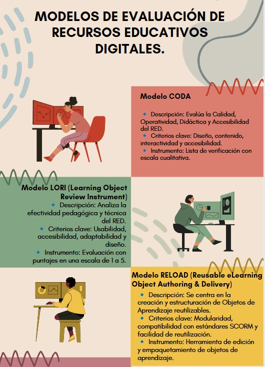
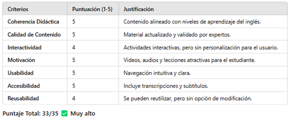
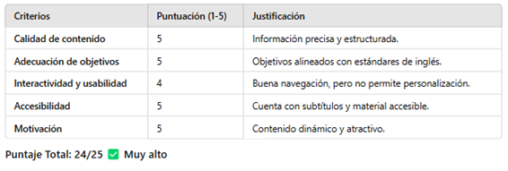
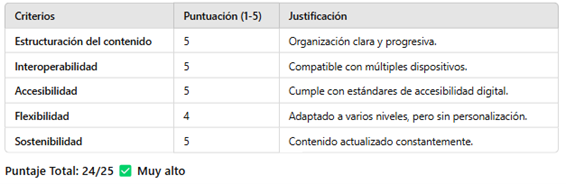
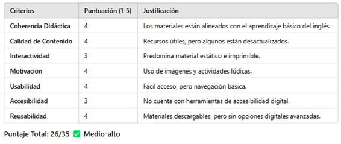
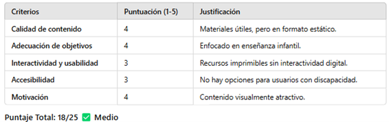
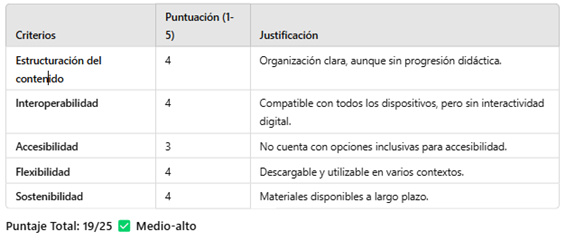
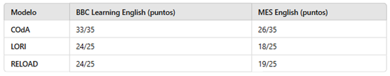
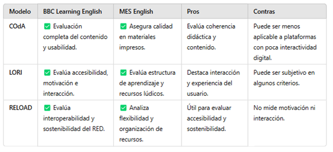

Video de modelo adaptable a la evaluación de calidad de RED
🔗 Enlace: Acceso a Video.
Modelos de Evaluación
- 
Evaluación de BBC Learning English
🔗 Enlace: BBC Learning English
- ✅ Aplicación del Modelo COdA 
- ✅ Aplicación del Modelo LORI 
- ✅ Aplicación del Modelo RELOAD 
Evaluación de MES English
🔗 Enlace: MES English
- ✅ Aplicación del Modelo COdA 
- ✅ Aplicación del Modelo LORI 
- ✅ Aplicación del Modelo RELOAD 
Análisis Comparativo y Selección del Modelo Más Pertinente
- 
🔹 BBC Learning English obtuvo una puntuación superior en todos los modelos, destacándose en calidad, interactividad y accesibilidad.
🔹 MES English es útil para enseñanza básica, pero con menos interactividad y accesibilidad digital.
Comparación y Selección del Modelo Más Pertinente
- 
Modelo Recomendado para Nuestro Contexto
En la Institución Educativa Agroindustrial Andrés Bello, trabajamos con estudiantes de sexto grado y buscamos fortalecer el aprendizaje del inglés con herramientas digitales. Por ello, el Modelo LORI es el más adecuado.
Justificación:
- ✔ Evalúa la coherencia didáctica de los recursos educativos.
- ✔ Considera la calidad del contenido y su aplicabilidad en el aula.
- ✔ Analiza la reusabilidad de los materiales.
- ✔ Identifica áreas de mejora para adaptar estrategias pedagógicas.